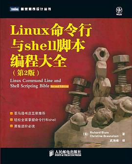

Linux命令行与shell脚本编程大全
作品信息
| 作者 | Richard Blum / Christine Bresnahan |
| 译者 | 武海峰 |
| 出版社 | 人民邮电出版社 |
| 出版年 | 2012-9 |
| ISBN | 9787115288899 |
| 页数 | 619 |
| 装帧 | 平装 |
| 定价 | 99.00元 |
| 原作名 | Linux Command Line and Shell Scripting Bible, Second Edition |
| 丛书 | 图灵程序设计丛书·Linux/UNIX系列 |
最后一次看到是 2026-08-12T17:45:21+08:00 · 豆瓣原页